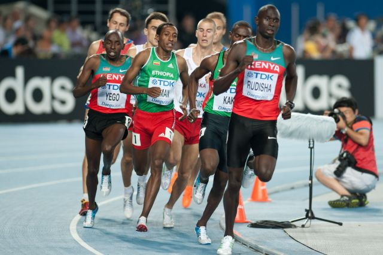
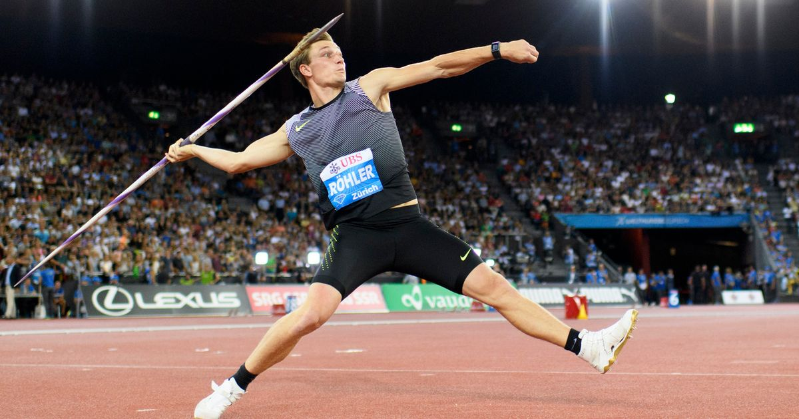
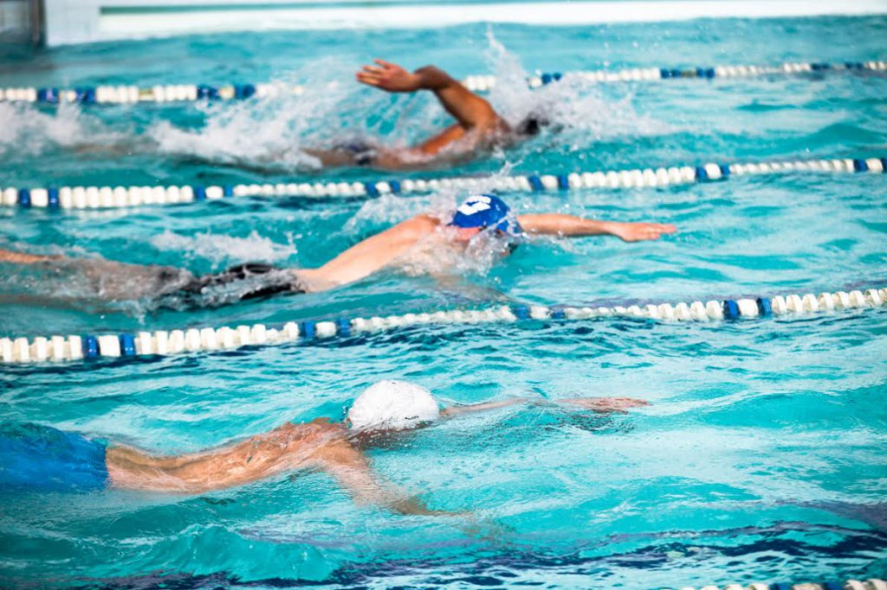
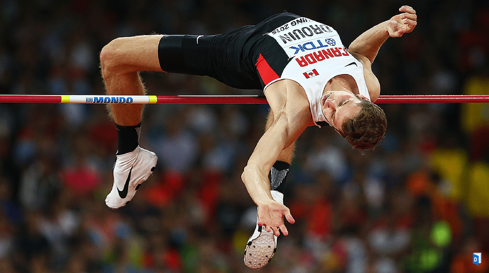

Vous avez établi un nouveau record dont vous êtes fier, ou vous avez assisté à un record spéctaculaire que
vous ne voulez pas oublier. E-sportbien est un outil qui permet d'enregistrer er comparer les différentes
performances.
Les disciplines

Le 800 mètres est une épreuve d'athlétisme de demi-fond, la plus courte de cette catégorie,
correspondant à deux tours sur une piste en plein air.

Le lancer du javelot est une discipline athlétique consistant à lancer un engin appelé javelot fait en métal, en fibre de verre ou en fibre de carbone. Cette épreuve n'est pas toujours présente aux meetings d'athlétisme notamment en raison des règles de sécurité.

La natation figure au programme des Jeux olympiques d'été depuis la première édition des Jeux olympiques modernes en 1896.

Le saut en hauteur est une épreuve d'athlétisme qui consiste à franchir une barre posée entre deux supports verticaux en prenant appui sur une jambe.